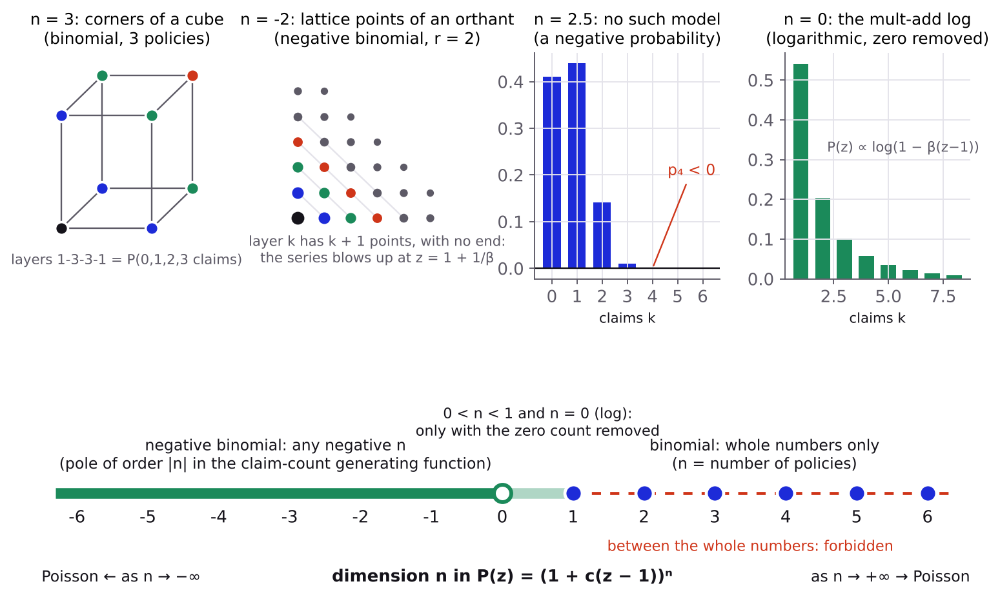
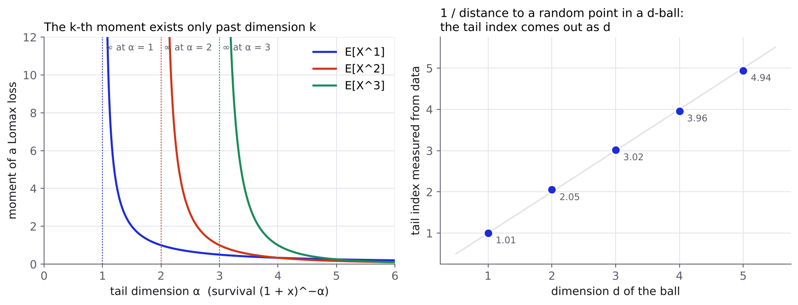
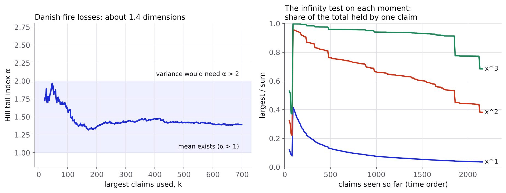
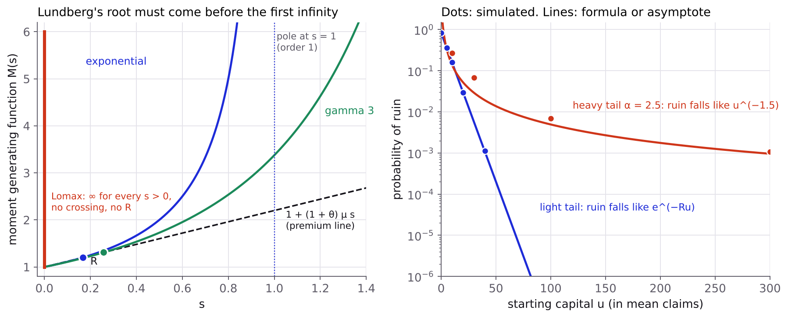
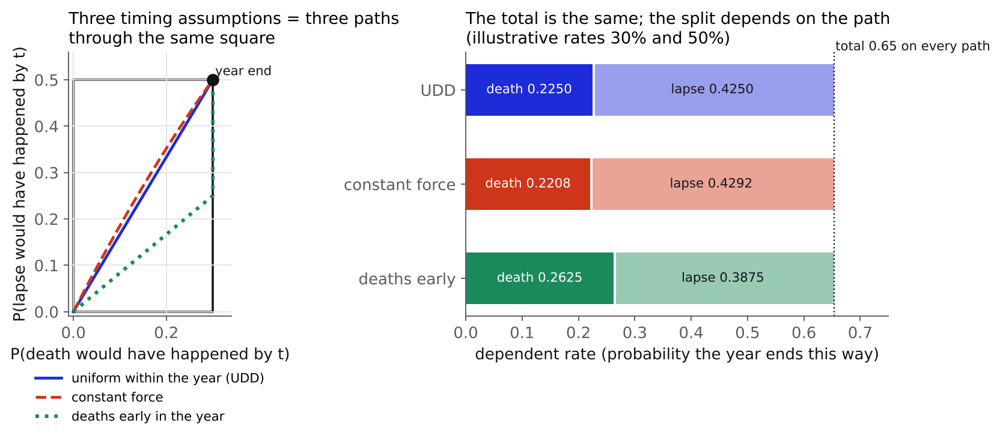
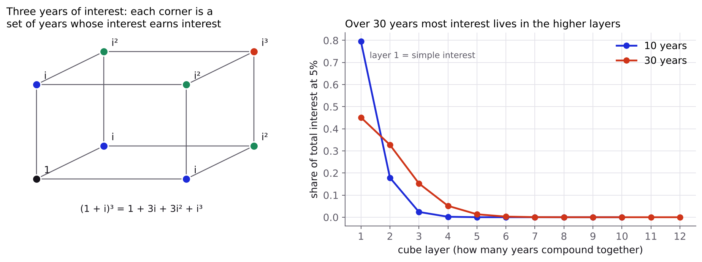
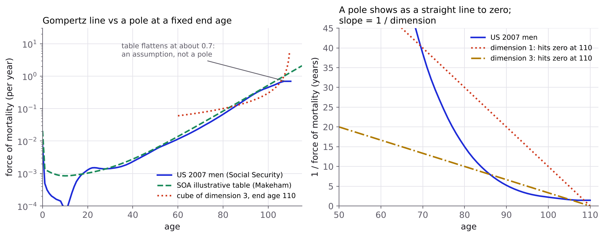

How I read your idea: in a risk model, find the place where something goes infinite (a moment, a generating function, a force of mortality), and read the order of that infinity as a dimension. That is a real principle in mathematics, and actuarial models obey it.
The cleanest result: every standard claim-count model is one circle power, P(z) = (1 + c(z − 1))ⁿ. Its dimension n can be any negative number, but above 1 only whole numbers exist. Between them the model would need negative probabilities. Like your 1, 3, 7 spheres, only certain dimensions survive.
Every number below was checked in Python on real data: 2,167 Danish fire insurance losses (1980 to 1990), the US Social Security life table for 2007, and the Society of Actuaries' illustrative life table.

"Direct hit" means the actuarial tool is the circle operation ∘₁ (called mult-add before 1.0) itself. "Strong" means the infinity test does real work there.
| Tool | Fit | What the circle operation or the infinity test does | Known since |
|---|---|---|---|
| Claim-count models | Direct hit | Binomial, Poisson and negative binomial are one circle power with dimension n. Above 1 only whole numbers exist; a portfolio of m policies splits into k equal independent pieces only if k divides m. | Panjer 1981; Sundt and Jewell 1981; Willmot 1988 |
| Multiple decrements | Direct hit, new-looking picture | The total rate is a circle operation. A timing assumption is a path through the cube; the standard one (UDD) gives the Shapley value, the other (constant force) is the same path in circle-operation log coordinates. | Formulas: Bowers et al. 1986. The path reading: not found |
| Independent risks, cumulants | Direct hit | For independent risks, M − 1 combines by the circle operation, so n risks form an n-cube; cumulants are the circle-operation log. | Thiele 1889; classical |
| Interest and discount | Direct hit | Rates compound by the circle operation, force of interest is log(1 + i), the discount rate is the negated circle inverse, and annuities are cube layers. | Classical |
| Heavy tails | Strong | The k-th moment goes infinite exactly when the tail dimension α reaches k. Danish fire losses measure about 1.4: the mean exists, the variance does not. | Hill 1975; Mandelbrot 1960s |
| Ruin theory | Strong | Lundberg's safety exponent must sit before the first infinity of the claim transform. No infinity-free room means no exponent, and ruin falls only like a power. | Lundberg 1903; Cramér 1930; Embrechts and Veraverbeke 1982 |
| Force of mortality | Good | Hazard = boundary ÷ volume. A hard maximum age is a pole whose order is a dimension; Gompertz mortality has no pole. Real tables don't settle which. | de Moivre 1725; Gompertz 1825 |
Mathematics already has three versions of your idea, and each one shows up in insurance.
The right plate makes the third one literal. Drop a point at random in a d-dimensional ball and take X = 1 / (distance to the centre). Its tail index, measured from 300,000 samples with the standard Hill estimator, comes out as d: 1.01, 2.05, 3.02, 3.96, 4.94. A loss with tail index α behaves like one over a distance in α dimensions, and fractional α is a fractional dimension.

An insurer models the number of claims N with a probability generating function P(z) = Σ P(N = k) zᵏ. The three standard models are all one circle power:
Actuaries know these as the only models whose probabilities obey pk / pk−1 = a + b/k (the Panjer recursion, used to compute total losses). The dimension falls out as n = −1 − b/a; I recovered n = 5, −2.5 and −0.7 exactly from test cases.
Try n = 2.5. The series (0.7 + 0.3z)2.5 gives P(N = 4) = −0.00054. Every positive fractional dimension I tried (0.5, 1.5, 2.5, 3.3) fails the same way, two steps past its whole part. So:
A second obstruction is pure divisibility. A binomial portfolio of m policies splits into k identical independent sub-portfolios only if k divides m: the k-th circle root of P must have no negative coefficients. Checked: m = 6 splits for k = 2, 3, 6; m = 7 only for k = 7. (The proof is one line: the pieces must be polynomials, and degrees add.)
Weekly claim counts in the Danish fire data (573 weeks): mean 3.77, variance 4.97. The extra spread points to the negative binomial, with dimension n ≈ −12 and a pole at z ≈ 4.2. It beats Poisson on likelihood (−1247 vs −1259) and on busy weeks (15 weeks with 9+ claims; Poisson expects 9). Some of that spread is a rising trend over the decade, not pure randomness.
For a loss X, the moment generating function is M(s) = E[esX]. For independent losses, M multiplies, so M − 1 combines by the circle operation:
With n independent risks, Mtotal − 1 is a sum over the corners of an n-cube: each corner is a group of risks acting together. Taking log(1 + ·) turns this into plain addition. That log is the cumulant generating function, which actuaries already use because it adds across independent risks.
Checked with three different risks (an exponential, a gamma and a compound Poisson) at s = 0.3: the product gives 1.0902179827, the circle operation gives 1.0902179827, and the sum over cube corners gives 1.0902179827. Two million simulated portfolios give 1.0893.
This is the formal group law of your operation doing actuarial work: a "number" here is the whole curve M(s) − 1, and its log coordinate is the cumulant.
The standard heavy-tailed loss in insurance is the Lomax (Pareto II) distribution. Its survival function is
which is a circle power with n = −α, the same shape as the negative binomial's generating function. Its moments are finite only below α (left plate above), so the negative dimension of the power is literally the moment cutoff.
What each cutoff means for an insurer:
You can't see an infinite moment in a finite sample: every sample average is finite. Two standard tests read it anyway:
Both are known tools (Hill 1975; Embrechts, Klüppelberg and Mikosch 1997). What your framing adds is the reading: the test measures how many "moment dimensions" a risk has.
The classic heavy-tail data set: 2,167 fire claims of at least 1 million Danish kroner, 1980 to 1990, in 1985 values. The mean claim is 3.39 million; the largest is 263 million.
So this book of business lives between dimension 1 and 2: you can price its average, but its year-to-year swings have no finite variance. That matches the published analyses of this data.

An insurer starts with capital u, collects premiums at a loading θ above expected claims, and pays random claims. Lundberg's theorem says the chance of ever going broke is at most e−Ru, where R solves
(μ is the mean claim). Geometrically, R is where the convex curve M(s) crosses the premium line. That crossing must happen before M(s) goes infinite.

A policy can end several ways in a year: death, lapse, disability. Each has an absolute rate q′ (what would happen if it were the only cause). The chance the policy ends at all is a circle operation:
With death from the SOA table at age 45 (0.40%), lapse 6% and disability 0.4% (both illustrative), the total is 6.7502%. Adding the rates gives 6.7997%; the extra 0.0495% is the cube's faces, years where two causes would both have struck.
Actuaries then need the dependent rates: how many policies end by each cause. That depends on when in the year each cause strikes, and textbooks offer two assumptions. Here is what they are geometrically:

| Cause | UDD formula | Shapley | Constant force |
|---|---|---|---|
| Death | 0.00386906 | 0.00386906 | 0.00386790 |
| Lapse | 0.05976042 | 0.05976042 | 0.05976273 |
| Disability | 0.00387233 | 0.00387233 | 0.00387117 |
| Total | 0.06750180 | 0.06750180 | 0.06750180 |
The equal-corner split and the log-coordinate diagonal match to 13 decimals. Four million simulated lives under each assumption agree within three standard errors.
A year at 3% then a year at 5% gives 3% ∘₁ 5% = 8.15%. The rest of the interest toolkit follows:
All classical. The cube adds a picture: each corner is a set of years whose interest compounds together.

Survival over the year is also a circle operation: the 3-year death chance at 45 from the SOA table, 1.291699%, equals −((−q₄₅) ∘₁ (−q₄₆) ∘₁ (−q₄₇)) to all digits. The force of mortality μ = −log(1 − q) is its circle-operation log.
Now the geometric version. If survival to age x is the volume of a shrinking k-dimensional cube with side (1 − x/ω), then
That has a pole at the end age ω, and the order of the pole is the dimension k. On a plot of 1/μ, it shows as a straight line hitting zero with slope 1/k. That is the infinity test for "is there a maximum human lifespan?"

Known: every formula on this page. The Panjer family and its classification (Panjer 1981, Sundt and Jewell 1981, Willmot 1988), cumulants, interest theory, the multiple-decrement formulas (Bowers and others, Actuarial Mathematics), Hill's estimator, Lundberg–Cramér ruin and its heavy-tail version, Gompertz and de Moivre, Hilbert–Serre, and Owen's and Aumann–Shapley's values.
Possibly new, as pictures:
Nothing here is as strong a lead as the solitons. The decrement-path picture is the one worth pushing.
No Lean file this time. The clean pieces are either one-line ring identities or need real analysis, and the library that has both (mathlib) is blocked here. The decrement-path identity is the best candidate once it's reachable.
checks.py, checks_output.txt, figures.py and the data files (with data/SOURCES.md) are in your project folder under math-theory/actuarial. Data: Danish fire losses (McNeil 1997), US Social Security period life tables and the SOA illustrative life table, each read from the R packages evir, fitdistrplus and lifecontingencies.